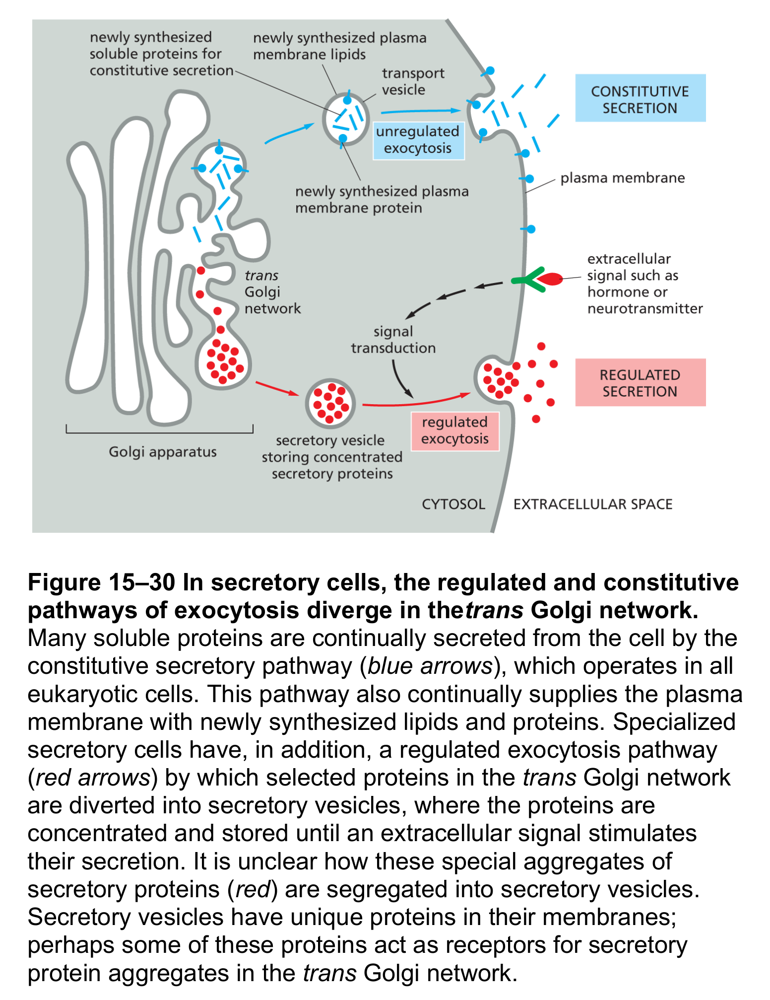
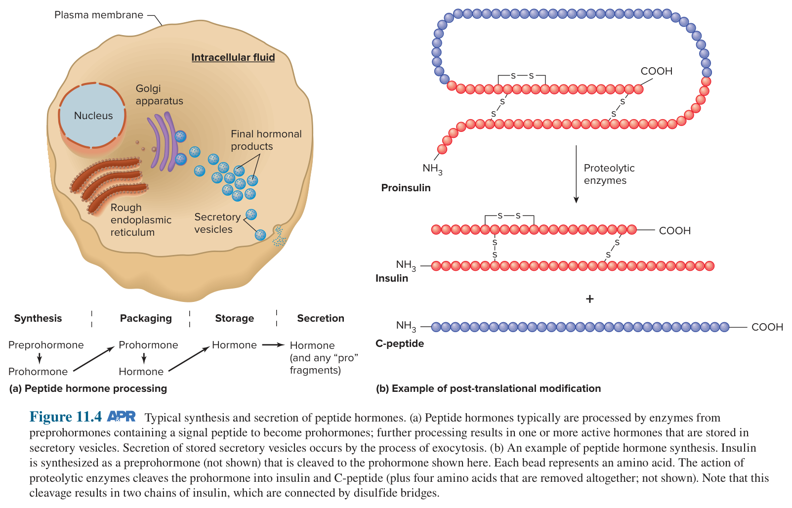
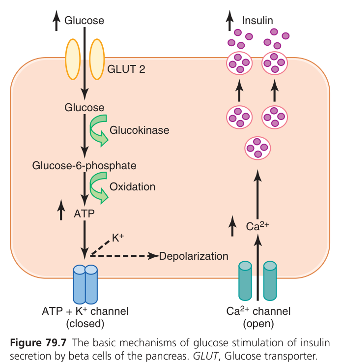
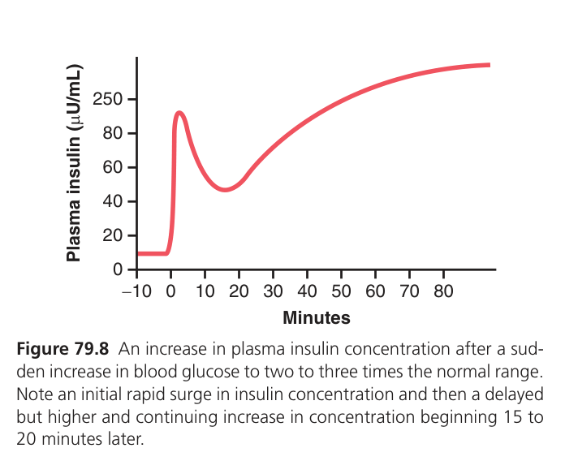

按需供應的兩種速度：大腸桿菌 lac 操縱組 vs. 人類胰島素調控型胞吐
沒乳糖時大腸桿菌不必表現 lac 操縱組；沒吃飯時，我們的身體也是「不製造胰島素」嗎？一次串聯轉錄調控、調控型胞吐、雙相胰島素分泌與類固醇激素，看見細胞在「省能量」與「搶時間」之間的精妙取捨。
沒進食時，胰臟 β 細胞並不是「不製造」胰島素，而是「早就先做好、高濃度囤在分泌囊泡裡，只是先不釋放」！
這剛好和大腸桿菌 lac 操縱組形成對比：大腸桿菌是「現點現做」（轉錄層次調控，乳糖來才合成，約 15 分鐘達高峰）；人類胰島素是「先囤貨急救、再補貨」（餐後 3–5 分鐘內先靠胞吐傾倒庫存壓住血糖，約 15 分鐘後才啟動新合成補貨）。至於人體裡真正像大腸桿菌一樣「不囤貨、需要才現做」的，反而是脂溶性的類固醇激素（如皮質醇、性激素），因為它們會直接穿過囊泡膜漏出去、根本存不住！
01 三種「按需供應」策略一次看懂
不管是細菌還是人體，背後都遵循「按需供應、避免浪費，而且平時都不是絕對的 0（都有非零基礎量）」的大原則；但因為各系統對「反應速度」和「化學性質」的限制不同，演化出了三種截然不同的控制層次：
| 比較項目 | 大腸桿菌 lac 操縱組 | 人類胰島素（胜肽激素） | 人類類固醇激素（如皮質醇） |
|---|---|---|---|
| 平時沒訊號時「有沒有先製造？」 | 幾乎不製造（抑制蛋白結合操作子，僅極低量基礎轉錄） | 早就先製造並囤在分泌囊泡裡（空腹僅維持約 10 μU/mL 基礎分泌） | 幾乎不囤貨（脂溶性分子會自由穿過脂雙層，無法用囊泡儲存） |
| 主要開關在哪一層 | 轉錄層次（抑制蛋白 LacI ＋ 活化蛋白 CAP–cAMP） | 第一相：胞吐層次（Ca²⁺ 觸發囊泡融合） 第二相：合成補貨 |
酵素合成層次（收到上游激素訊號才催化膽固醇生成，現做現擴散） |
| 反應速度 | 較慢（約 15 分鐘使酵素暴增 1,000 倍） | 極快（3–5 分鐘內暴增近 10 倍；15 分鐘後接續新合成第二波） | 較慢（需活化細胞內合成酵素路徑） |
| 背後的演化取捨 | 細胞小、能量珍貴；多等 15 分鐘消化乳糖不會致命 | 飯後血糖急升須在數分鐘內調降，不能等從 DNA 現做造成的延遲 | 親脂性結構決定存不住，只能透過調控合成速率控制釋放量 |
02 細胞生物學視角：持續型胞吐 vs. 調控型胞吐
在遺傳學裡，我們把不受環境開關控制、持續轉錄的基因叫做持續表現型基因（constitutive gene）；有趣的是，在細胞生物學（Alberts ECB 6e Ch. 15）裡，真核細胞的分泌也用一模一樣的字根分成兩條路線：
- 持續型胞吐路徑（constitutive exocytosis）：所有真核細胞日夜不停運作，持續補充細胞膜脂質、膜蛋白與一般分泌蛋白。
- 調控型胞吐路徑（regulated exocytosis）：只存在於內分泌細胞（如胰臟 β 細胞）、神經元、消化腺等特化分泌細胞。細胞會先從粗面內質網與高基氏體把大量激素濃縮打包進分泌囊泡（secretory vesicles），預先停靠在細胞膜下方，等外界訊號（血糖上升）一到才立刻融合釋放！

🔍 點擊放大檢視原圖
🔍 點擊放大檢視原圖03 時間尺度的驚人巧合：3–5 分鐘急救 vs. 15 分鐘現做補貨
把人體生理學的雙相胰島素分泌曲線（Guyton & Hall 15e Fig. 79.8）和細菌分子生物學的乳糖誘導曲線（Sadava 12e Fig. 16.2）放在一起比對，會看見一個讓學生拍案叫絕的物理巧合：
- 血糖升高後 3–5 分鐘內（第一相）：葡萄糖經 GLUT2 進入 β 細胞 → 氧化產生大量 ATP → 關閉 ATP 敏感性 K⁺ 通道 → 細胞膜去極化 → 電壓閘控 Ca²⁺ 通道打開 → 瞬間傾倒預先停靠在膜旁的胰島素囊泡，血漿胰島素立刻暴增近 10 倍！
- 血糖升高約 15 分鐘後（第二相）：庫存先用掉一部分後，細胞啟動新胰島素的合成與釋放補貨，在 2–3 小時內推向更高平台。
- 對照大腸桿菌（約 15 分鐘）：大腸桿菌因為沒有預先囤貨，加入乳糖後從轉錄、轉譯把 β-半乳糖苷酶衝到 1,000 倍，同樣需要約 15 分鐘！這正證明：凡是要「從頭合成新蛋白質」，細胞都需要十幾分鐘的準備時間；因此人體用「囊泡庫存」硬是把緊急反應速度提前了 3–5 倍！

🔍 點擊放大檢視原圖
🔍 點擊放大檢視原圖 🔍 點擊放大檢視原圖
🔍 點擊放大檢視原圖
04 跨領域正典中英原句對照
以下完整彙整細胞生物學、人體生理學與普通生物學 5 部原文正典的逐字引文。
2. 約 15 分鐘開始第二次上升，源自進一步釋放預先形成的胰島素，以及合成並從細胞釋放新胰島素的酵素系統被活化。
[Sadava 12e Ch. 16] "Regulation of protein synthesis—that is, regulation of the concentration of enzymes—is slower but results in greater savings of energy and resources. Protein synthesis is a highly endergonic process, since assembling mRNA, charging tRNA, and moving the ribosomes along mRNA all require the hydrolysis of nucleoside triphosphates such as ATP."
[Sadava 12e] 蛋白質合成的調控速度較慢，卻能節省更多能量與資源，因為組裝 mRNA、為 tRNA 充電與核糖體移動皆需大量水解 ATP。
05 課堂提問設計與延伸閱讀
講完「lac 操縱組省能量」後，可以直接問學生：
「既然沒乳糖就不製造酵素這麼省能量，那我們沒吃飯時，胰臟 β 細胞也是等血糖升高才開始從 DNA 轉錄製造胰島素嗎？」
引導學生從「反應時間需求（3 分鐘急救 vs. 15 分鐘補貨）」與「激素水溶性／脂溶性（能不能鎖在囊泡裡）」兩個線索推導出答案，一次把分生、細生、動物生理三冊貫通！
延伸閱讀（本站相關專題）
- 想完整複習原核正／負調控與持續／誘導／抑制分類，請見 原核細胞的基因表現調控分類（13 套課本總盤點）。
- 想深入了解大腸桿菌如何偵測乳糖與葡萄糖，請見 大腸桿菌如何感測葡萄糖與乳糖？ 與 普生 8 套課本怎麼講大腸桿菌偵測乳糖？。
- 想看另一組精彩跨界比較（細菌感測乳糖 vs. 植物沒有眼睛卻能看見光與光週期），請見 沒有眼睛、鼻子、嘴巴，生命如何感知世界？。
本頁所有機制與數據（持續型 vs. 調控型胞吐、前胰島素原切割與囊泡儲存、GLUT2–ATP–K⁺–Ca²⁺ 觸發胞吐、3–5 分鐘第一相與 15 分鐘第二相雙相曲線、類固醇激素親脂性無法儲存、lac 操縱組 15 分鐘誘導與轉錄調控省能權衡）皆直接引自 Alberts ECB 6e、Guyton & Hall 15e、Vander 16e、Campbell 13e 與 Sadava 12e 正式譯本。另刻意未採用 Alberts ECB 6e 圖 15–31 電顯圖（因該版原書圖內標註為神經元突觸囊泡，與圖說文字存在原書編印出入），改採最清晰無歧義的圖 15–30 搭配 Vander 圖 11.4 與 Guyton 圖 79.7／79.8 呈現。